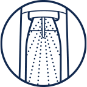

saturator
do wody gazowanej
ART GOLD
ZMIEŃ SWOJĄ WODĘ
W GAZOWANĄ JUŻ
W KILKA SEKUND!
Zamień zwykłą wodę w musujące
arcydzieło z SodaStream
Art Gold!
Odkryj limitowaną edycję saturatora, która hipnotyzuje złotym
blaskiem i elegancją. To nie tylko urządzenie do gazowania,
to prawdziwy manifest stylu, który odmieni Twoją kuchnię.
Poczuj się jak alchemik smaku, tworząc wyjątkowe napoje gazowane
na 1,2, tssst! SodaStream Art Gold - gdy codzienność spotyka się
z luksusem.
Dlaczego warto wybrać
SodaStream Art Gold?
Wyjątkowy design: Złote akcenty i elegancka forma
sprawia, że saturator zyskuje wyrafinowany charakter, dzięki
czemu stanie się on ozdobą Twojej kuchni.
Wszechstronny styl:
SodaStream Art Gold doskonale wkomponuje się w różne aranżacje
wnętrz, od nowoczesnych, po klasyczne i vintage.
Wygoda i funkcjonalność: Ciesz się świeżo gazowaną
wodą i ulubionymi napojami w dowolnej chwili, dzięki łatwej
i intuicyjnej obsłudze saturatora.
SodaStream Art Gold został stworzony z myślą o Twojej wygodzie i
stylu. W zestawie znajdziesz wszystko, co niezbędne, aby od
razu rozpocząć swoją przygodę z gazowaniem wody w wyjątkowym
wydaniu:
Saturator SodaStream Art Gold
Elegancki, stylowy, z luksusowym złotym wykończeniem,
który doda blasku Twojej kuchni.
Butelka Wielorazowego Użytku
Dopasowaną stylistycznie butelkę o pojemności 1 litra, wykonaną
z materiałów wolnych od BPA i bezpieczną do mycia w zmywarce.
Cylinder z Gazem CO₂ Quick Connect
Nabój z opatentowanym systemem szybkiego łączenia Quick Connect,
napełniony najwyższej jakości gazem spożywczym CO₂.
1

Gazuj
Napełnij butelkę
wielorazową zimną wodą
z kranu do
wyznaczonej
linii i nagazuj tak, jak
lubisz.
2
Miksuj
Dodaj wybrany syrop
smakowy, aby stworzyć
ulubiony napój
gazowany.
3
Smakuj
Przelej napój do szklanki
i ciesz się bąbelkami.
Z SodaStream Art Gold tworzenie orzeźwiających napojów nabiera wyjątkowego blasku, a Ty masz pełną kontrolę nad intensywnością bąbelków. Wolisz delikatnie musujące napoje czy mocno nagazowane? Zaskocz najbliższych i gości napojami idealnie dopasowanymi do ich upodobań. Wspólnie spędzone chwile są bowiem na wagę złota!
Ozdób swoje chwile z SodaStream Art Gold
i ciesz się bąbelkami
dokładnie takimi, jak lubisz!
1-2 naciśnięcia
woda lekko gazowana, subtelne
orzeźwienie na co dzień
3-4 naciśnięcia
woda średnio
gazowana, doskonała na spotkania
z przyjaciółmi
5-7 naciśnięć
woda mocno gazowana, intensywny smak na wyjątkowe
okazje
Do świeżo gazowanej wody z saturatora dodaj ulubione składniki: sezonowe owoce, cytrusy, świeże zioła lub pyszne syropy smakowe. Poeksperymentuj z różnymi połączeniami, twórz własne kompozycje smakowe i ciesz się orzeźwiającymi napojami idealnymi na każdą okazję.
Orzeźwiające chwile
z SodaStream Crafted
Masz ochotę na coś wyjątkowego? Dzięki SodaStream Art Gold
przygotowanie pysznych napojów jeszcze nigdy nie było tak proste i
stylowe! Wykorzystaj bezalkoholowe bazy SodaStream Crafted, aby w
mgnieniu oka stworzyć orzeźwiające lemoniady na dzień
i wykwintne drinki na wieczór. Zaskocz siebie i swoich gości
niebanalnymi kompozycjami smakowymi, które podkreślą każdą okazję.
Ananas & Jalapeño
Soczysty ananas z pikantnym akcentem jalapeño. Idealne dla tych,
którzy lubią połączenie słodyczy z nutą ostrości.
Grejpfrut & Kwiat Czarnego Bzu
Świeżość grejpfruta wzbogacona delikatnym aromatem
kwiatu czarnego bzu. Doskonały wybór, gdy masz
ochotę na chwilę relaksu.
Brzoskwinia & Imbir
Słodka brzoskwinia przełamana wyrazistym smakiem imbiru.
Napój, który jednocześnie orzeźwia i rozgrzewa.
Perfekcyjne koktajle i moktajle na 1, 2, Tssst!
Jeśli pragniesz jeszcze więcej smakowych inspiracji...
...poznaj szeroką gamę naszych syropów SodaStream!
Wybieraj spośród owocowych, orzeźwiających smaków – także w wersji
bez cukru. Masz ochotę na coś klasycznego? Sięgnij po uwielbianą
Colę, Cytrynę Limonkę, a nawet domową lemoniadę,
którą przygotujesz w kilka chwil. A jeśli pragniesz czegoś
kultowego, spróbuj smaków Pepsi, Mirinda i
7Up.
Twórz, eksperymentuj i ciesz się bąbelkami dokładnie tak, jak
lubisz!
Bąbelkuj ze smakiem
#PushForBetter